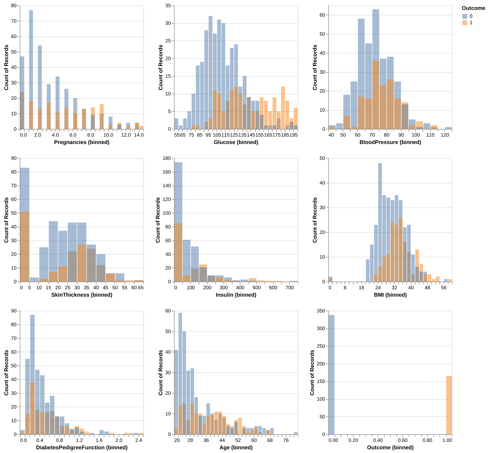
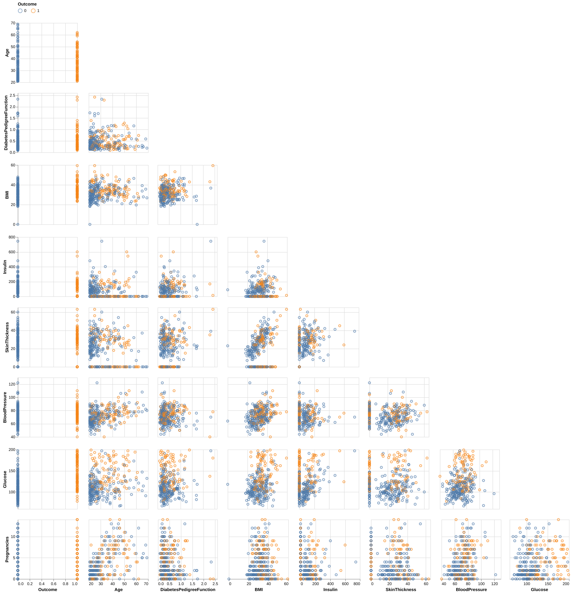

| Features | Coefficients | |
|---|---|---|
| 0 | Glucose | 0.723708 |
| 1 | BMI | 0.3887 |
| 2 | Pregnancies | 0.228731 |
| 3 | Age | 0.194047 |
| 4 | DiabetesPedigreeFunction | 0.160928 |
| 5 | BloodPressure | 0.0480461 |
| 6 | SkinThickness | -0.00650682 |
| 7 | Insulin | 0.00196834 |
Predicting Diabetes in Pima Indian Women Using Logistic Regression
Summary
In this study, we aim to address the question of whether clinical features such as glucose levels, BMI, pregnancies, and etc. can effectively predict diabetes in Pima Indian women. The importance of this work lies in improving the early detection of diabetes, a condition that is prevalent and can lead to severe health complications if left untreated. Early prediction and diagnosis of diabetes can significantly improve patient outcomes through timely intervention.
We built a logistic regression model with hyperparameter optimization for C, and evaluated its performance on the test set. The final classifier achieved an accuracy of 0.750 on the test set, outperforming the baseline dummy classifier’s accuracy of 0.672. Glucose was the most significant predictor, followed by BMI and pregnancies, while blood pressure and insulin had weaker impacts. Out of a total of 217 test cases, the model correctly predicted 162 and misclassified 54. 41 mistakes were predicting patients with diabetes as non-diabetic (i.e. false negatives), while 13 mistakes were predicting healthy (non-diabetic) patients with diabetes (i.e. false positives).
The results indicate that logistic regression is a promising tool for diabetes screening, providing an efficient way to identify potential cases. However, the high number of false negatives is concerning, as they could lead to delayed diagnoses and treatments. The use of logistic regression itself has some limitations as it assumes linear relationships and may not capture complex interactions between features. Future improvements could include feature engineering of polynomial features, testing alternative machine learning models, reporting more metrics to reflect model performance (i.e. recall and / or f2 score to focus on reducing false negatives), and incorporating additional data, such as lifestyle or genetic factors. Moreover, adding probability estimates for predictions could also enhance its clinical usability by helping prioritize further diagnostic tests. These steps could make the model more reliable and practical for real-world healthcare applications.
Introduction
Diabetes is a serious chronic disease characterized by high levels of glucose in the blood, which can result from insufficient insulin production or the body’s inability to effectively use insulin. Its prevalence has nearly doubled since 1980, with 14% of adults aged 18 and older diagnosed with diabetes in 2022, up from 7% in 1990 (World Health Organization n.d.). The disease can lead to severe complications, including blindness, kidney failure, heart attacks, strokes, and lower limb amputations. Early detection allows for timely interventions, reducing complications and healthcare costs, and improving quality of life and long-term outcomes (Marshall and Flyvbjerg 2006).
Artificial intelligence (AI) leverages computer systems and big data to simulate intelligent behavior with minimal human intervention, and within it, machine learning (ML) is a subset of AI methodologies. Since the rise of AI, Machine learning has increasingly been applied in various areas of disease detection and prevention in the healthcare field (Bini 2018). Numerous machine learning techniques have been deployed to develop more efficient and effective methods for diagnosing chronic diseases (Battineni et al. 2020). Utilizing machine learning methods in diabetes research has been proven to be a critical strategy or harnessing large volumes of diabetes-related data to extract valuable insights (Agarwal and Vadiwala 2022).
This study aims to address the research question: can diabetes in Pima Indian women be accurately predicted using clinical features such as glucose levels, BMI, and pregnancies? The dataset used for this analysis, the Pima Indians Diabetes Database, contains clinical data for 768 women aged 21 and older, with 8 input variables: number of pregnancies, plasma glucose concentration, iastolic blood pressure, triceps skinfold thickness, serum insulin, body mass index (BMI), diabetes pedigree function, and age. The output variable is whether or not the woman has diabetes, with two classes: positive (1) or negative (0). To this end, the objective of this report is to evaluate the predictive performance of logistic regression (LR), a supervised machine learning model, in diagnosing diabetes.
Methods
Data
The dataset that was used for the analysis of this project was created by Jack W Smith, JE Everhart, WC Dickson, WC Knowler, RS Johannes and sourced from the National Librabry of Medicine database from the National Institues of Health. Access to their respective analysis can be found here and access to the dataset can be found via kaggle (Dua and Graff 2017). The primary objective of the dataset is to enable diagnostic prediction of whether a patient has diabetes based on specific diagnostic measurements. The dataset comprises 768 female patients aged 21 and older, all of whom are of Pima Indian heritage, located primarily in the Central and Southern regions of the United States.
Each row/obersvation from the dataset is an individual that identifies to be a part of the Pima (also known as The Akimel O’odham) Indeginous group. Each observation recorded has summary statistics regarding features that include the Age, BMI, Blood Pressure, Number of Pregnancies, as well as The Diabetes Pedigree Function (which is a score that gives an idea about how much correlation is between person with diabetes and their family history). The output variable in the dataset is whether the patient is diabetic (outcome), with two classes: diabetic (1) or non-diabetic (0). The dataset is imbalanced, with 268 diabetic and 500 non-diabetic patients. This imbalance poses challenges for classification models, which may become biased toward predicting the majority class. Usually to address this, appropriate evaluation metrics, such as F1 score, should be considered during model evaluation and hyperparameter tuning to avoid the model being skewed towards the non-diabetic class.
A total of 49 observations were dropped during preliminary data validation. These rows contained meaningless or introducing noise or spurious relationships into the model. Further details on the dropped observations can be found in the validation log here, under validation_errors.log. The log indicates that most of the dropped data points contain values of 0, which are not plausible for the respective variables. As a result, we suspect these zero values may represent missing data, recorded in this way. If we gain access to the data collectors, we plan to confirm this assumption.
Analysis
In this study, Logistic Regression was employed to develop a classification model for predicting whether a patient has diabetes. The model was trained using all features in the dataset, with the outcome column serving as the target variable. The data was split into a 70% training set and a 30% testing set.
Hyperparameter tuning was performed using RandomizedSearchCV, and the accuracy score was used as the evaluation metric for model performance. The hyperparameter C of the Logistic Regression model, which controls the trade-off between model complexity and training data fitting, was optimized using a log-uniform distribution ranging from (1 ^{-5}) and (1 ^{5}). The range and log-uniform distribution was chosen to efficiently explore a wide range of values, balancing model complexity and fitting. This approach ensures the model is not overly regularized or overfitted, promoting better generalization to unseen data.
Standardization was applied to all input variables just before model fitting to ensure that the features were on the same scale. This process was done to improve model performance and to help prevent any single feature from dominating the others. The analysis was conducted using the Python programming language (Van Rossum and Drake 2009) and several Python packages: numpy (Harris et al. 2020), Pandas (McKinney 2010), altair (VanderPlas 2018), altair_ally (Ostblom 2021) and scikit-learn (Pedregosa et al. 2011). The code used for this analysis and report is available at: https://github.com/UBC-MDS/diabetes_predictor_py
Results
To assess the potential usefulness of each predictor in forecasting the Outcome variable: 0 (Non-Diabetic) and 1 (Diabetic), we visualized the distributions of each predictor from the training dataset, with the distributions color-coded by class (0: blue, 1: orange) as shown in Figure 1.
For the Glucose levels, Non-Diabetic class exhibits a roughly normal distribution, whereas the Diabetic class shows a pronounced shift toward the middle-to-higher range of glucose levels.
The BMI distribution resembles a normal distribution but skews slightly toward higher values. Similar to Glucose levels, the Diabetic class displays a decent shit towards the middle-to-higher ranges when compared to Non-Diabetic class, suggesting the potential for distinct differences between target groups within this category.
The Age distribution reveals that individuals aged 20 to 32 are predominantly Non-Diabetic. Beyond age 32, the counts of Diabetic and Non-Diabetic individuals become comparable, with some bins showing a higher count for the Diabetic class, despite fewer overall observations in this group. The Non-Diabetic class leans toward younger ages, while the Diabetic class has a more even distribution across its age range.
For Pregnancies, Insulin, and DiabetesPedigreeFunction - genetic risk of diabetes based on family history ranging from 0 to 2.5, the lower range of pregnancies is dominated by the Non-Diabetic class, whereas whereas higher numbers are more common in the Diabetic class.
For Blood Pressure and Skin Thickness, both the Diabetic and Non-Diabetic classes approximates a normal distribution; however, the Non-Diabetic distribution skews slightly towards lower values, while the Diabetic class skews more towards higher values.

We also examined the presence of multicollinearity among the predictors in Figure 2, as it could be problematic when conducting a Logistic Regression. We see that highest level of correlation is between Age and Pregnancies (0.626 via Spearman, and 0.566 by Pearson). Since this is below the threshold of 0.7, we can conclude that all features’ coefficients are suitable and will not cause any multicollinearity in our model.

Finally, we looked at the pairwise scatterplots between features in Figure 3 to detect any additional patterns. For the most part, the features do not display noticeable trends. However, Skin Thickness and BMI show a moderate visual relationship, which is intuitive since higher body mass is generally associated with increased skin thickness.

We used the Dummy Classifier to act as our baseline for conducting our initial analysis. The Dummy Baseline gives us a score of around 0.672.
We then used Logistic Regression model for classification. We optimized the hyperparameter C using a random search approach and have identified C = 0.027 as the optimal C to be used in our Logistic Regression model.
Having determined the best Logistic Regression model for our analysis, we further explore feature importance with coefficients. Based on the Table 1 above, the feature importance coefficients for the logistic regression model predicting diabetes reveal that Glucose (0.724) is the strongest positive influence, followed by BMI (0.389), Pregnancies (0.229), Age (0.194), and DiabetesPedigreeFunction (0.161). The negative influence SkinThickness (-0.007) along with the remaining positive features BloodPressure (0.048) and Insulin (0.002), have weak impacts on the prediction, with their effects being less pronounced.
We then evaluate the best Logistic Regression model, obtained from the hyperparameter search, on the test set. Our prediction model performed decent on test data, with a final overall accuracy of 0.750. In addition, looking through confusion matrix (Figure 4), there are a total of 54 mistakes. Of which, 41 mistakes were predicting diabetic as non-diabetic (false negatives) and 13 mistakes were made predicting diabetic as non-diabetic (false positives). Considering implementation in clinic, there is room for improvement in the algorithm as false negatives are more harmful than false positives, and we should aim to lower false positives even further.
In this report, we have used the default 0.5 threshold in Logistic Regression model to predict the patient being diabetic or non-diabetic. To better evaluate model’s performance across all thresholds, we also presented here the Precision Recall curve (Figure 5) and the ROC curve (Figure 6) - assessing the tradeoff between true positive and false positive rates. For both plots, we did not observe an optimal threshold that can achieve high precision, high recall, and low false positive rate all at once. Therefore, further improvements on the Logistic Regression model or alternative models should be contemplated in further research.


To improve the model’s clinical utility, we provide a visualization of estimated prediction probabilities (Figure 7) for diabetes predictions. This allows clinicians to assess the model’s confidence in its predictions and decide whether additional diagnostic tests are needed if the probability is not sufficiently high. Visualizing these probabilities alongside prediction accuracy offers a clearer understanding of the model’s performance, highlighting both correct predictions and misdiagnoses, especially false negatives, which are of particular concern in a clinical setting due to their critical consequences.
Discussion
While the performance of this model may be valuable as a screening tool in a clinical context, especially given its improvements over the baseline, there are several opportunities for further enhancement. One potential approach is to closely examine the 54 misclassified observations, comparing them with correctly classified examples from both classes. The objective would be to identify which features may be contributing to the misclassifications and investigate whether feature engineering could help the model improve its predictions on the observations it is currently struggling with. Additionally, we would try seeing whether we can get improved predictions using other classifiers. Other classifiers we might try are 1) random forest because it automatically allows for feature interaction, 2) k-nearest neighbours (k-NN) which usually provides easily interpretable and decent predictions, and 3) support vector classifier (SVC) as it allows for non-linear prediction using the rbf kernel. Finally, there runs the possibility that the features offered from this dataset alone are not sufficient to predict with high accuracy. In this case, conducting additional conversations with data collectors for additional useable information or explore additional datasets that can be joined so our set of features can be expanded for more complicated analysis might be beneficial.
At last, we recognize the limitation with this dataset, as it focuses solely on Pima Indian women aged 21 and older, which limits its generalizability to other populations. To improve the analysis, it would be valuable to combine this data with other datasets representing different age groups, genders, and ethnicities, enabling more comprehensive insights and broader applicability of the findings.
Conclusion
In conclusion, this study demonstrated the effectiveness of logistic regression in predicting diabetes among Pima Indian women using diagnostic features such as glucose, BMI, and pregnancies. With an accuracy of 0.750 on the test set, the model outperformed the baseline Dummy Classifier’s 0.672. Glucose was identified as the most influential predictor, followed by BMI and pregnancies, while features like blood pressure, insulin, and skin thickness had weaker impacts. However, the model’s 54 misclassifications, particularly the 41 false negatives, underscore the need for further refinement to minimize the risk of undiagnosed cases.
These findings highlight logistic regression’s potential as an initial screening tool in clinical settings, offering a data-driven approach to early diabetes detection. Nevertheless, improvements are essential to enhance its accuracy and practical utility. Strategies such as feature engineering, alternative machine learning models, and the incorporation of additional data, such as lifestyle or genetic factors, could further optimize performance. Additionally, providing probability estimates for predictions could enhance clinical decision-making by identifying cases requiring further diagnostics. With these refinements, the model could become a valuable tool for reducing complications and improving outcomes in diabetes care.
References
Agarwal, Neetu, and Ronak Vadiwala. 2022. “Machine Learning and Data Mining Methods in Diabetes Research.” Asian Journal of Organic & Medicinal Chemistry.
Battineni, Gopi, Getu Gamo Sagaro, Nalini Chinatalapudi, and Francesco Amenta. 2020. “Applications of Machine Learning Predictive Models in the Chronic Disease Diagnosis.” Journal of Personalized Medicine 10 (2): 21. https://doi.org/10.3390/jpm10020021.
Bini, Stefano A. 2018. “Artificial Intelligence, Machine Learning, Deep Learning, and Cognitive Computing: What Do These Terms Mean and How Will They Impact Health Care?” The Journal of Arthroplasty 33 (8): 2358–61. https://doi.org/10.1016/j.arth.2018.02.067.
Dua, Dheeru, and Casey Graff. 2017. “Pima Indians Diabetes Database.” https://www.kaggle.com/datasets/uciml/pima-indians-diabetes-database/data.
Harris, Charles R, K Jarrod Millman, Stéfan J Van Der Walt, Ralf Gommers, Pauli Virtanen, David Cournapeau, Eric Wieser, et al. 2020. “Array Programming with NumPy.” Nature 585 (7825): 357–62. https://doi.org/10.1038/s41586-020-2649-2.
Marshall, Sally M, and Allan Flyvbjerg. 2006. “Prevention and Early Detection of Vascular Complications of Diabetes.” Bmj 333 (7566): 475–80. https://doi.org/10.1136/bmj.38908.704828.AE.
McKinney, Wes. 2010. “Data Structures for Statistical Computing in Python.” In Proceedings of the 9th Python in Science Conference, edited by Stéfan van der Walt and Jarrod Millman, 51–56. https://doi.org/10.25080/Majora-92bf1922-00a.
Ostblom, Joakim. 2021. “Altair_ally: Enhancing Altair for Statistical Visualization.” https://github.com/jostblom/altair_ally.
Pedregosa, Fabian, Gaël Varoquaux, Alexandre Gramfort, Vincent Michel, Bertrand Thirion, Olivier Grisel, Mathieu Blondel, et al. 2011. “Scikit-Learn: Machine Learning in Python.” The Journal of Machine Learning Research 12: 2825–30. https://doi.org/10.48550/arXiv.1201.0490.
Van Rossum, Guido, and Fred L. Drake. 2009. Python 3 Reference Manual. Scotts Valley, CA: CreateSpace.
VanderPlas, Jake. 2018. “Altair: Interactive Statistical Visualizations for Python.” Journal of Open Source Software 3 (7825, 32): 1057. https://doi.org/10.21105/joss.01057.
World Health Organization. n.d. “Diabetes.” https://www.who.int/news-room/fact-sheets/detail/diabetes.